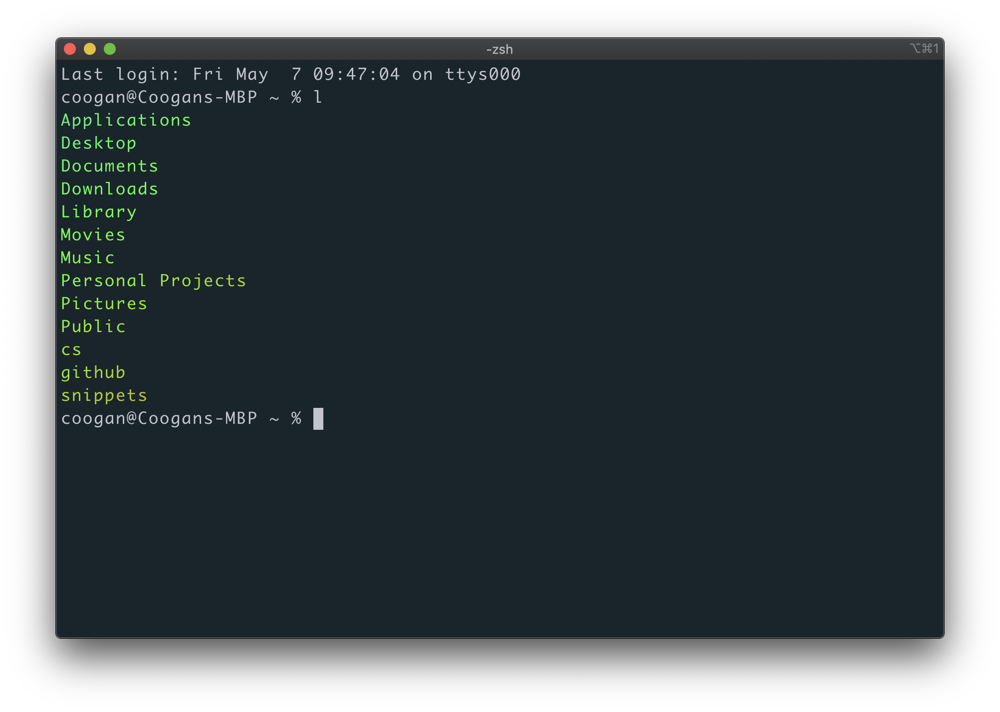

What is the Command Line Interface (CLI)?
The command line interface (CLI) is the basic non-graphic interface for your computer. It is sometimes also called the terminal, the shell, or the bash client. In this section, we'll go over some basic concepts and go over basic commands. We'll also include at the bottom some resources where you can learn more.
Everything is a File
An overarching philosophy with command line clients is the concept that Everything is a File. This means that every item you see on the command line interface or terminal is a file that can either be written to (changed) or read. Take a look at the image below:
This is a terminal showing the contents of the current user's directory (also known as a folder) using a common command ls. This is the user's "Home" folder and, even though these are more folders, the command line simply sees them as files. We can read these files, or we could write to / change these files (by adding more documents or changing their name, for example).
No matter what kind of file the folder holds, the command line will simply understand it as a file. This is a form of abstraction which allows the command line to generalize computation in a powerful way. This concept of command line abstraction is extremely important and you can read more about it in this e-book here.
Command Line Syntax
In this section, we'll be borrowing heavily from the Ubuntu Help website.
The Prompt
The prompt shows that you've properly loaded your command line and it's ready to receive instructions. While it looks different on different computers, it is generally portrayed using the structure:
USERNAME@COMPUTER_NAME:~ $
So if you're name was Jaime and you were on a Ubuntu machine, your prompt would look like:
Jaime@ubuntu:~ $
Most important here is the dollar sign $ which represents the command line. In tutorials, you may see code that starts with the $. This means that you should copy everything after the $ but do not include the $. It is only meant to signify the code given should be executed on the command line.